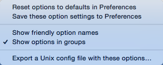

Revert Tidy Options to Default
You may find yourself using Balthisar Tidy’s Tidy Options panel to work with a document to determine the options that you want, and then realize that you went just too far and need a fresh start. Learn how to reset the current options back to the Preferences defaults in just three quick steps.
-
Access the menu at the bottom of the Tidy Options panel in the document that you want to reset. 
-
Select Reset options to defaults in Preferences.
-
You should see that all of the Tidy options have reverted to their default states.